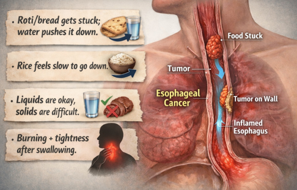
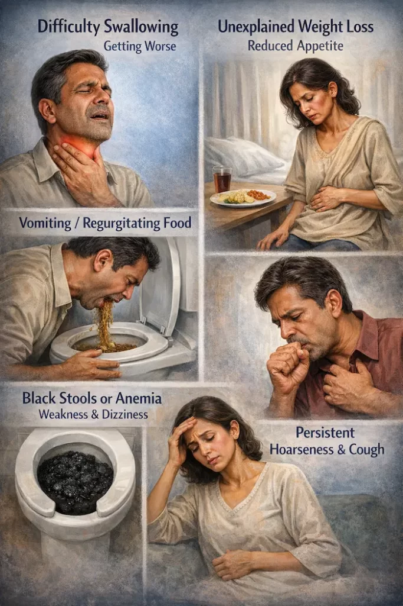
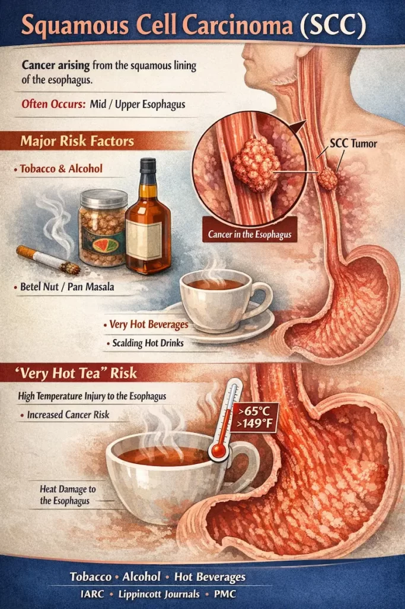
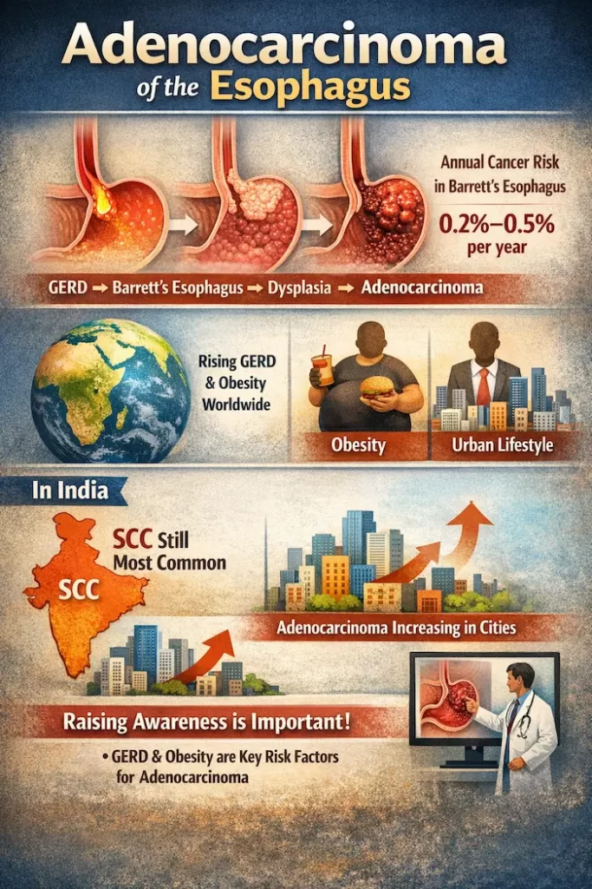

Squamous vs Adenocarcinoma: Understanding the “Food Stuck” Feeling (and why liquid diets delay diagnosis)
Squamous vs Adenocarcinoma: Understanding the “Food Stuck” Feeling (and why liquid diets delay diagnosis)
In Kolkata, many people quietly “adjust” when swallowing becomes uncomfortable: softer rice, more পানি (water), skipping meat, switching to soups, blaming acidity, and carrying antacids like they’re a life solution. The problem is—a symptom that changes your eating behaviour is not a symptom to manage; it’s a symptom to investigate.
At Advitya Healthcares, through PancreaCare, we often meet patients who waited weeks/months because “liquids were still going down.” But swallowing difficulty—especially when it’s changing your food choices—deserves medical attention early.
If you feel food getting stuck in your chest, or swallowing is painful, or you’re avoiding solids—please read this carefully. There are many non-cancer causes (acid-related narrowing, inflammation, rings, motility disorders), but esophageal cancer is one cause that must not be missed, because delay often means later-stage diagnosis.
This blog explains the two main types—Squamous Cell Carcinoma (SCC) and Adenocarcinoma—why they’re different, what symptoms truly matter, and what’s genuinely “new in the world right now” in esophageal cancer care, including:
- A surgical safety upgrade: Indocyanine Green (ICG) fluorescence to check blood flow in the “new food pipe,” helping reduce post-surgery leaks. (PubMed)
- A treatment shift: immunotherapy is now standard in specific stages (example: adjuvant nivolumab after chemoradiation + surgery with residual disease). (U.S. Food and Drug Administration)
The symptom that deserves respect: “food is sticking”

People describe it in different ways:
- “Roti/bread gets stuck; water pushes it down.”
- “Rice feels slow to go down.”
- “Liquids are okay, solids are difficult.”
- “Burning + tightness after swallowing.”
A classic medical clue is this: if solids become difficult before liquids, it can suggest a physical narrowing (a stricture or growth). In early phases, people compensate by eating soft food and think it’s improving—when it’s actually progressing.
Don’t ignore these red flags
- Swallowing trouble that is progressively worsening
- Unexplained weight loss, reduced appetite
- Vomiting/regurgitating food
- Black stools or anemia symptoms (weakness, dizziness)
- Persistent hoarseness or cough

Patient-focused cancer guidelines list swallowing difficulty, appetite loss, and early fullness among common symptoms. (NCCN)
Kolkata note (practical): If you’re “managing” by switching to liquids, that’s not a solution—it’s often a sign to do endoscopy early. This is exactly where PancreaCare by Advitya Healthcares helps patients move from guesswork to a proper diagnosis pathway.
Two main cancers of the food pipe: SCC vs Adenocarcinoma
Most esophageal cancers fall into these two categories.
A) Squamous Cell Carcinoma (SCC)

What it is: Cancer arising from the squamous lining of the esophagus.
Where it often occurs: Mid/upper esophagus more commonly (not always).
Major links (real, well-established):
- Tobacco (smoking/chewing), alcohol
- Areca nut / betel nut / pan masala exposure is frequently discussed in Indian risk profiles
- Very hot beverages (temperature-related injury)
Indian reviews and consensus documents consistently highlight tobacco/alcohol and other exposures as major SCC risk factors in India. (Lippincott Journals)
“Very hot tea” — the detail that matters
This is not about tea itself. It’s about temperature. WHO/IARC concluded that drinking very hot beverages is probably carcinogenic to humans (Group 2A) for esophageal cancer, emphasizing that temperature is the likely driver of injury. (IARC)
A newer UK Biobank analysis (2025) also reports evidence supporting hot/very hot beverages as a risk factor for esophageal squamous cell carcinoma. (PMC)
Kolkata takeaway: If you drink tea “just after pouring,” make one easy change—let it cool a little.
B) Adenocarcinoma

What it is: Cancer often arising near the lower esophagus / gastro-esophageal junction.
Classic pathway: Chronic GERD → Barrett’s esophagus → dysplasia → cancer (in a minority of people).
A clinical review summarises the approximate annual cancer progression risk in nondysplastic Barrett’s as ~0.2–0.5% per year (risk is higher with dysplasia). (PMC)
Why the world is talking about adenocarcinoma more
Globally, adenocarcinoma trends are closely linked to GERD and obesity. (PMC)
The global burden of GERD has increased substantially over decades (GBD-based analysis through 2021). (OUP Academic)
India nuance (important): In many Indian datasets, SCC is still the dominant type, and the “Western-style” explosion of adenocarcinoma is not uniformly seen across India. For example, a large India-based demographic trends paper reports SCC as the most common subtype and notes that the dramatic Western rise of adenocarcinoma was not seen in that series. (PMC)
ICMR’s esophagus consensus document (older but still informative) also describes SCC as the majority in that referenced cohort. (Indian Council of Medical Research)
So the honest summary is:
- SCC remains common in India, and
- Adenocarcinoma risk factors (GERD + obesity) are rising, especially in urban lifestyles—meaning adenocarcinoma awareness matters more now than it did earlier. (Lippincott Journals)
The “right” diagnosis roadmap
(not guesswork)
If swallowing is abnormal, the aim is to see the esophagus and—if needed—prove the cause.
Step 1: Upper GI Endoscopy + Biopsy (non-negotiable if symptoms persist)
Endoscopy directly visualizes inflammation, narrowing, ulcers, or growth and allows biopsy for confirmation. Patient guidelines emphasize biopsy/endoscopic evaluation as a cornerstone of diagnosis and staging planning. (NCCN)
How PancreaCare by Advitya Healthcares fits in (simple):
We help patients get the right first test (endoscopy when indicated), then move step-by-step into staging only if needed—so people don’t waste weeks on “trial medicines” when the symptom is clearly progressing.
Step 2: Staging scans (if cancer is confirmed)
Staging decides treatment. Common tools include:
- CT scan (chest/abdomen)
- Endoscopic ultrasound (EUS) for depth + nearby lymph nodes in many cases
- PET-CT in selected scenarios
Major guideline bodies (e.g., NCCN/ESMO) outline structured staging approaches. (esmo.org)
Kolkata practicality: Don’t worry about memorizing tests. The key is: get endoscopy early, then let the care team stage properly instead of “trial medicines for weeks.”
Treatment (what patients should understand before fear takes over)
Treatment depends on type, stage, and fitness—so avoid copying someone else’s plan.
Early lesions (very superficial)
Selected early cancers can sometimes be treated with endoscopic resection (organ-preserving approach) per guideline pathways. (NCCN)
Locally advanced cancers
Often managed with multimodality care (chemotherapy ± radiotherapy) and surgery for suitable candidates. ESMO provides evolving guidance for perioperative strategies, especially for adenocarcinoma/OGJ tumors. (esmoopen.com)
At Advitya Healthcares / PancreaCare, the goal is coordinated care—so patients understand:
- what stage they are in,
- what the intent is (curative vs control), and
- why a combined plan (oncology + surgery + nutrition + follow-up) is chosen.
What’s new in the world: Immunotherapy is now part of standard care in specific settings
One major, practice-changing example:
- The FDA approved nivolumab (an immunotherapy) in 2021 for adjuvant treatment after complete resection in patients with residual disease following neoadjuvant chemoradiotherapy for esophageal/GEJ cancer (based on CheckMate 577). (U.S. Food and Drug Administration)
This matters because it’s not “experimental talk”—it’s real-world standard-of-care for a defined group of patients.
What’s New in Surgery: Indocyanine Green (ICG) Fluorescence
to reduce leaks
Now to the update you mentioned—this is one of the most meaningful “quiet revolutions” in esophageal surgery.
Why leaks are feared (and why they happen)
In many esophagectomies, surgeons create a “new food pipe” using the stomach (a gastric conduit) and join it to the remaining esophagus (an anastomosis).
If that join leaks, it can cause serious infection, prolonged hospitalization, and major recovery setbacks.
A key reason leaks happen: poor blood supply to the end of the conduit.
What ICG fluorescence does
- ICG is a dye injected into a vein.
- Under near-infrared imaging, it lights up blood flow.
- Surgeons can visually confirm perfusion of the gastric conduit and choose a better site for the join.
What the evidence says
- A 2024 systematic review and meta-analysis compared ICG-guided vs non-ICG esophagogastric anastomosis and evaluated outcomes including anastomotic leak. (PubMed)
- Earlier clinical studies also describe ICG as an emerging tool aimed at lowering leak rates by improving intraoperative decision-making. (PubMed)
- Additional 2024 surgical research (including in McKeown minimally invasive esophagectomy contexts) continues to evaluate leak reduction and technique standardization. (Jogs)
Plain-English takeaway:
ICG doesn’t “guarantee no leaks,” but it helps surgeons avoid the worst mistake: joining tissue that looks fine but has weak blood flow.
A question patients can ask (simple and fair)
If surgery is planned, you can ask:
“Do you assess gastric conduit blood flow (ICG fluorescence or another method) to reduce anastomotic leak risk?”
Kolkata risk checklist
If you want prevention to be realistic, focus on controllables:
For SCC risk reduction
- Stop tobacco (smoked/chewed) and reduce alcohol exposure. (Lippincott Journals)
- Avoid very hot beverages; let tea cool. (IARC)
- If you use areca/pan masala: understand it is not harmless—discuss cessation support.
For Adenocarcinoma risk reduction
- Treat long-standing GERD properly and don’t self-medicate for years without evaluation. GERD prevalence in India has been estimated in meta-analytic work and is associated with BMI and lifestyle factors. (PubMed)
- Work on weight, late-night heavy meals, and triggers if reflux is frequent.
The most important call-to-action
If your swallowing is changing—food sticking, avoiding solids, needing water to push food down—don’t “adjust your diet” and wait.
Get an upper GI endoscopy.
It replaces months of guessing with facts—and it can be life-saving if caught early. (NCCN)Need a structured evaluation in Kolkata?
You can reach out to PancreaCare by Advitya Healthcares for a step-by-step roadmap—starting with the right test (often endoscopy when indicated) and then proper staging and treatment planning only if required.
Have a question this article does not answer?
Send us your reports. A specialist reviews them before you travel, so the first visit begins with a plan rather than a repeat test.